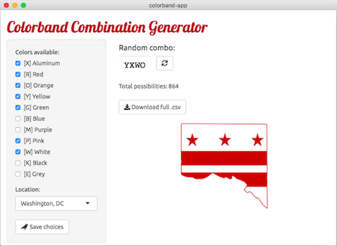

Projects
Research
Red-headed Woodpeckers
As part of my Master’s work with the Bulluck Avian Ecology Lab, I studied Red-headed Woodpecker (Melanerpes erythrocephalus) parental care behavior. Below is a summary of my research using a series of infographics. To learn more, check out my parental care publication.
![Red-headed Woodpecker parental care results summary. Ninety-nine percent of all woodpecker species are sexually dimorphic; less than one percent are truly monomorphic. Red-headed and Lewis's Woodpeckers are the only monomorphic woodpeckers. Since males and females are hard to tell apart in monomorphic species, parental care behaviors are often under-studied. We used DNA to sex color-banded Red-headed Woodpeckers and video-recorded their parental care. Males did nearly all of the nest cleaning. Provisioning, also known as feeding chicks, was equal. Incubation and diurnal brooding was done by females more.](images/rhwo_parental_care.png)


Apps
Garden Helpr
Repository: https://github.com/lawalter/gardenhelpr
In development. 2022-present

I started this R Shiny app to assist in backyard garden planning. Initially, I had an idea to calculate the mean pH requirements of all of the plants I was hoping to grow in my yard. As I did more research, I learned about the benefits of companion planting (and drawbacks to planting “enemies” together)! When completed, the gardenhelpr app will be able to take a list of plants a user is planning to grow and output both (1) ideal growing conditions (pH, soil, light, etc) as well as (2) any plant relationships and subsequent spacing recommendations.
Colorband Combination Generator
Repository: https://github.com/lawalter/colorband-app
Complete. 2020

Created as a test case for my r-shiny-electron-app repository, this is a simple R Shiny app packaged with Electron that creates random color combinations for bird banding. Colors can be selected based on what’s available in a banding kit, and selections are saved for future use via shinyStore.
Guides
Shiny Electron App Creation Guide
Repository: https://github.com/lawalter/r-shiny-electron-app
Complete. 2020
This is a guide to creating a desktop R Shiny app on both macOS and Windows with Electron.